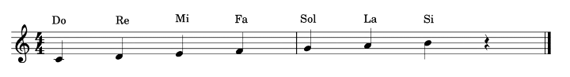

When we think about musical notes, this is what usually comes to mind:

If we count them, we get seven musical notes, seven sounds: do (C) – re (D) – mi (E) – fa (F) – sol (G) – la (A) – si (B). However, in the Western musical system, we actually have twelve notes, not seven.